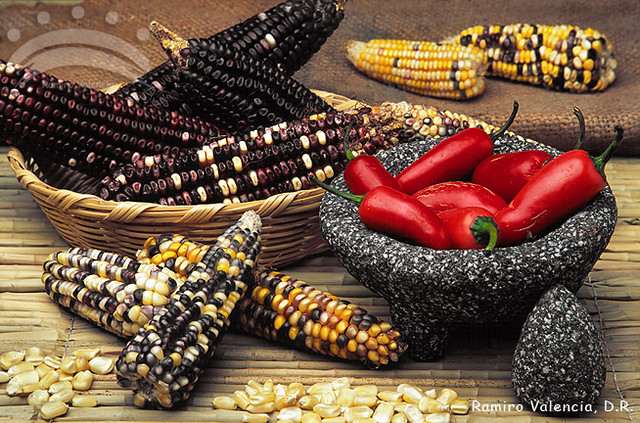

La Triada de la Milpa: Maíz, Chile y Frijol
Desde la época prehispánica, la base de la alimentación mexicana ha girado en torno a un ecosistema agrícola perfecto llamado milpa. En este espacio, las plantas conviven ayudándose mutuamente a crecer, aportando balance al suelo y nutrientes indispensables al ser humano.

Los Tres Ingredientes Sagrados
A continuación se describe la importancia de cada elemento en la cocina diaria tradicional:
- 1. El Maíz: Es el corazón de nuestra cultura. Gracias al descubrimiento de la nixtamalización (cocer el maíz con agua y cal de piedra), los granos se vuelven más suaves y nutritivos, permitiendo la creación de la masa para tortillas, sopes, tamales, atoles y pozole.
- 2. El Chile: Lejos de usarse solo para que la comida pique, los chiles secos y frescos son la base para dar color, sazón y cuerpo a caldos y guisados. Aportan una complejidad aromática frutal, ahumada o dulce, única en el mundo.
- 3. El Frijol: Cultivado a la par del maíz, el frijol es el acompañamiento caldoso, refrito o entero que balancea el menú. Ofrece los carbohidratos y proteínas esenciales que complementan las propiedades del grano del maíz.
Resumen Técnico de los Elementos
Comparativa rápida de los aportes y derivados más comunes de la triada tradicional mexicana:
| Elemento | Variedades Principales | Aporte Principal | Derivado Común |
|---|---|---|---|
| Maíz | Blanco, Azul, Pozolero, Cacahuazintle | Carbohidratos y Calcio (por la cal) | Tortillas, Masa, Pozole, Tamales |
| Chile | Poblano, Serrano, Jalapeño, Ancho, Guajillo | Vitaminas A y C, antioxidantes | Moles, Salsas, Adobos, Rajitas |
| Frijol | Negro, Flor de Mayo, Bayo, Peruano | Proteína vegetal y Hierro | Frijoles refritos, enfrijoladas |